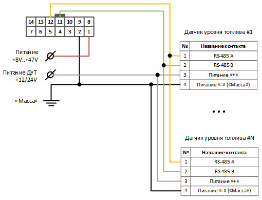

Подключение ДУТ
Ниже приведены примеры схем подключения
Устройства СИГНАЛ
Устройства СМАРТ

Настройка
ДУТ
При настройке датчиков следует соблюдать несколько обязательных правил:
- Выдача данных должна производится по запросу от Устройства
- Необходимо узнать адрес датчика.
При подключении нескольких датчиков, их адреса не должны совпадать
- Необходимо узнать скорость работы интерфейса.
Обычно используется скорость
19200бит/с.
Устройство
Настройка интерфейса
Настройки скорости интерфейса и адреса в устройствах должны совпадать с настройками в датчиках
Настройка интерфейса
Если выбран протокол передачи данных
FLEX 1.0, то на сервер передается только Уровень.
Если выбран протоколFLEX 2.0и выше, то на сервер передается Уровень и Температура.
Проверка
Телеметрия
Для проверки через окно "Телеметрия" необходимо подключиться к устройству по USB или удаленно.
Процесс удаленного подключения описан в соответствующей статье.
После подключения конфигуратором к устройству, необходимо открыть окно "Телеметрия"
Далее нужно включить автоматическое обновление параметров и посмотреть показания
Коды ошибок
В значении уровня топлива устройство может устанавливать коды ошибок - специальные значения, которые говорят о причине какой-либо неисправности.
Ниже приведена таблица с описанием кодов ошибок, которые могут быть установлены при работе с датчиками уровня топлива.
Окно логов
Просмотр логов возможен только при подключении по USB
Подробное описание по работе и функционалу окна логов приведено в соответствующей статье
Подключитесь по USB, в главном окне конфигуратора, в меню "Дополнительно" выберите пункт "Показать окно логов".
Ниже приведено описание сообщений ДУТ, работающих в протоколе "LLS".
Все значения влоге представлены в HEX (в шестнадцатеричной системе)
Запросы
Записи с меткой OUT - запросы от Терминала к ДУТ.
Например, запрос 3101066с это:
31 - заголовок, говорящий, что сообщение отправлено от Терминала к ДУТ;
01 - адрес запрашиваемого датчика;
06 - тип команды ("6" - запрос уровня топлива);
6с - контрольная сумма (не имеет смысла в данном случае).
Ответы
Записи с меткой IN - ответы от ДУТ к Терминалу.
Например, ответ 3e0106196400a00f74 это:
3e - заголовок, говорящий, что сообщение отправлено от ДУТ к Терминалу;
01 - адрес запрашиваемого датчика;
06 - тип команды ("6" - запрос уровня топлива);
19 - температура;
6400 - уровень;
a00f - частота;
74 - контрольная сумма (не имеет смысла в данном случае).
Преобразование температуры
Для преобразования значения температуры нужно только перевести значение из шестнадцатеричной системы в десятичную
0х19 -> 25*C
Преобразование уровня
Для преобразования значения уровня топлива нужно:
- поменять байты местами
0x6400->0x0064 - перевести из шестнадцатеричной системы в десятичную
0x0064->100у.е.
Преобразование частоты
Для преобразования значения частоты датчика топлива нужно:
- поменять байты местами
0xa00f->0x0fa0 - перевести из шестнадцатеричной системы в десятичную
0x0fa0->4000Гц
Дополнительно
Перевод из шестнадцатеричной системы в десятичную удобно производить через калькулятор Windows в режиме "Программист":